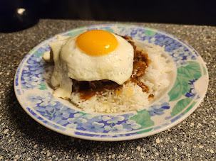

I love to cook! I try new recipes all the time. I have a few recipes I use often as well. Here is just a few of my favorite recipes!

Beef Stroganoff
Click here for recipe
Chicken Tacos
Click here for recipe

Loco Moco
Click here for recipe
For my go to recipe for scones, visit this website.

Click here
to visit the website.